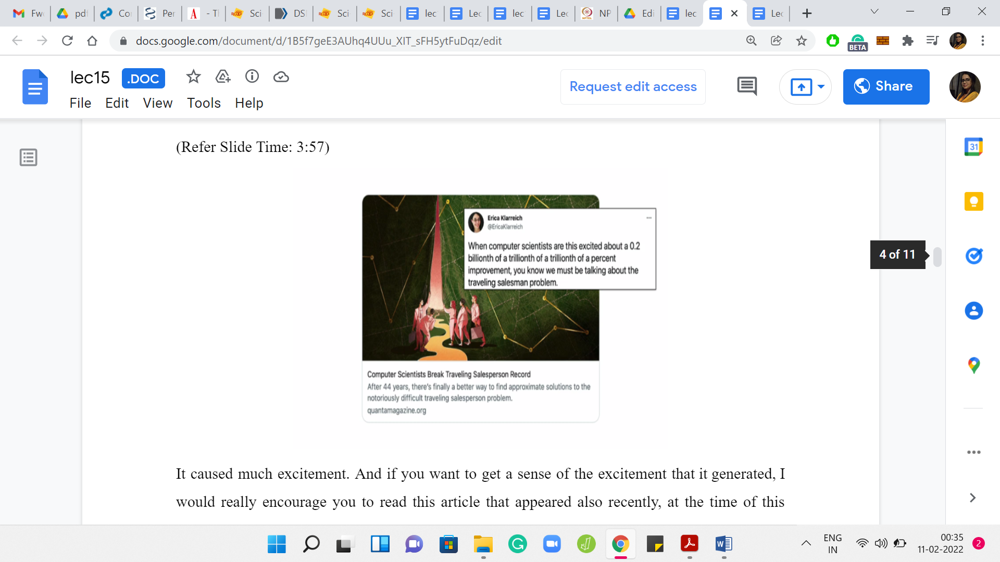
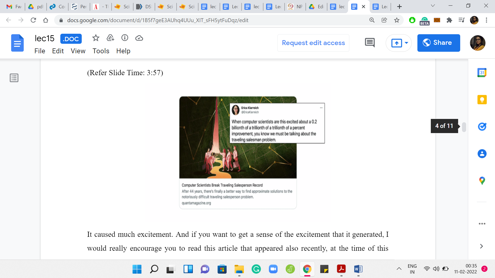

M 4 (When Greedy Does Not Work - Traveling Salesman)
Lecture - 15
Greedy Algorithms - Module 4 (When Greedy Does Not Work - Traveling Salesman)
Welcome to the last leg of our little tour of problems and situations where greedy algorithms, in fact, do not work. To demonstrate a situation where the greedy approach fails rather dramatically, I have picked the ‘Traveling Salesman Problem.’ You may have heard of this problem before given that it is a classic and famous optimization problem. Nevertheless, let us begin by looking at the definition.
(Refer Slide Time: 0:37)

In this problem, you are given a list or a set of N cities or locations and the costs of traveling between any pair of these locations. In the symmetric version, you might assume that the cost of traveling from A to B is the same as the cost of traveling from B to A, for any two cities A and B. In the asymmetric version, you drop this assumption. The cost of going from A to B may be different from the cost of going from B to A. This can happen, for example, in applications where you have some one-way roads between locations, and the situation is truly not symmetric.
These costs may not always reflect necessarily physical distances. The costs may be more abstract or may be based on other things, like their costs of actual airline tickets and things like this. In particular, the costs here may not satisfy things like the triangle inequality. It may be cheaper to go from A to C by going through a detour, unlike what would be intuitive if these were really physical locations in a plane.
Let us say that the costs were reflective of the Euclidean distances, as is the case in this example, which is essentially a recreation of the example on the Wikipedia page for this problem. Assuming that the cost between any pair of points is just proportional to the Euclidean distance between them on the plane, then the tour that has been drawn out right now is the optimal one.
Just to make our setting a little bit concrete, let us say that we are working with the symmetric version of the problem, wherein the cost of going from A to B is the same as the cost of traveling back from B to A. Further, let us say that we do not have the triangle inequality. The costs are arbitrary. They do not come from any underlying distance metric or anything like that. Let us also say that the costs are not bounded in any way. These could be arbitrary numbers. We do not assume, for example, that the costs have to come from the set: 1, 2, 3, 7, 10.
This is a fairly general version of the problem. Notice that intuitively, the more restrictions you put on the setting of the problem, the easier your job becomes as an algorithms designer. Because the hope is that you can leverage these extra assumptions and use them to your advantage when you are coming up with an algorithm. But you can imagine that your life as the designer of counter-examples to greedy approaches may become a little bit harder.
Because the more assumptions you make about the setting of the problem, the less wiggle-room you have while you are constructing your counter-examples. You are now constrained to operate within these assumptions. Hopefully, that bit of intuition made sense. As I said, the choices of assumptions, that I just described, are relatively arbitrary. I would welcome you to play around with a different setting and see what you find.
Now, if you are interested in the traveling salesman problem, in general, then the good news for you is that this is very much an active topic of research in computer science.
(Refer Slide Time: 3:41)
 

There was a paper that appeared in 2020, and it gives an improvement that has been long sought after. Despite the fact that the improvement may appear to be small, from reading the abstract, it caused much excitement.
If you want to get a sense of the excitement that it generated, I would really encourage you to read this article that appeared recently, at the time of this recording, in Quanta magazine, covering mostly the development around this paper, but also covering a lot of interesting history and trivia about the problem. This tweet about this article really reflects the sentiment of Computer Scientists around Traveling Salesman and shows how deeply we care about it and how fundamental the problem is to the field at large.
(Refer Slide Time: 4:37)

Traveling Salesman is also a bit of a cult classic. It is made its way into XKCD comics, and other popular culture. If you look at the description of this video, you will find a few links that you might want to look at if you are curious about the problem beyond this very short discussion. But let me just pause here and talk about what would be a natural gradient flow to Traveling Salesman?
You are in your origin city, thinking about planning your travels to the N cities on your list, the remaining ‘N-1’ cities on your list. You plan to come back once you are done. The natural thing to do is to perhaps just look at what is the cheapest city to go to from the one that you are at currently. In the first step, from the origin city, you just find the closest city in terms of cost the cheapest city to go to next.
Once you are at that city, you just repeat this exercise, making sure that you are only considering cities that you have not already visited as you go along. Except for, of course, when you are done, then the last move is forced because you have to come back to the origin.
At any intermediate point in your travels, just find the next cheapest city to travel to that you have not visited already, and then when you are done visiting all these cities once, at the very end, you just pick up the ticket back to the origin city. That is the greedy algorithm.
I would encourage you to think about whether this would work. Given the nature of this lecture, you already know the answer. What I would encourage you to do is pick up some pen and paper, or whatever your favorite way of thinking is. Just try to come up with a concrete counter-example. For this approach before I show you one.
(Refer Slide Time: 6:30)

Here is a specific example from the book ‘Design Methods and Analysis of Algorithms.’ If you look at the costs here, let us just try to run through what would happen if we applied the greedy algorithm with the origin city being the city on the top left, which is the city labeled A. From A, the most accessible city is B, and it is a cost of ‘one’ to go there. From B, you have two possibilities, you could go to D or C. It is cheaper to go to D. That is what we will do next.
From D, you cannot go to A, you cannot go to B. These are cities that are already visited. You pretty much do not have a choice at this stage and you have to take this rather expensive edge to C. From C, you return to the origin. The total cost of this tour that is inspired by the greedy strategy is 9 units. If you add up those numbers, you see that it is 5+2+1+1 = total cost of 9.
Once again, this is a good place to pause the video and think about whether you can beat the outcome of the greedy strategy. Is there a cheaper tour? If yes, by how much? Hopefully, you had a chance to think about this. It turns out that in this example, the greedy output is indeed sub-optimal. You can do better.
(Refer Slide Time: 7:54)

Here is, for instance, one way that you could do better. Starting at A instead of being distracted by the most tempting option, which is to go to B, let us take a locally sub-optimal option, which is to go to C first. We go from A to C, then from C to B, then from B to D, and from D to A. These last two moves that are essentially forced. But now if you look at the total cost of the store is going to be 2+2+1+3 = 8, which is better than the tour that we had from the greedy approach.
You could think about whether we could do even better. You could think about coming up with examples where the gap between the greedy answer and the optimal answer is perhaps larger because here it seems like just a tiny improvement. You could play around with that aspect of this as well. If you remember, in the beginning, I sort of said that ‘greedy’ fails quite badly for this problem.
There are many ways of quantifying the idea of how badly greedy fails, or even the idea of whether a greedy algorithm can be salvaged. In some situations, although the greedy algorithm may not get to the optimal answer, it may get to something that is close to optimal in a way that you can actually prove. These will be greedy approximation algorithms and they are quite common. But the comment we are going to make now is going to be in a different spirit.
(Refer Slide Time: 9:22)


It is a remark borrowed from the introduction of this paper, which is titled ‘When the Greedy Algorithm Fails.’ If you are curious to look up this paper, you can find a link to the PDF in the description of this video. But here is the comment which I wanted to bring to your attention.
It turns out that there are instances of TSP that you can construct, which are such that the space of solutions is abundant with many optimal solutions. Yet somehow the greedy algorithm will end up finding the unique worst solution. Notice that there is just one worst solution and the greedy algorithm will end up finding that one. You can also ensure that the magnitude by which the solution is worse than the optimal ones is rather large. As you can tell, you can make it as large as you want it to be.
This is the sense in which we meant that not only does the greedy algorithm fail, it is not that it misses the optimal solution by a whisker or that it fails occasionally. But this quantifiably demonstrates that you could construct instances, arguably artificially, on which the greedy algorithm can be as bad in its performance as you want it to be.
All this is not to say that one must completely disregard greedy approaches, even to TSP. It is conceivable that there are subclasses of instances where the greedy approach performs okay or perhaps there are other heuristics, which are a more sophisticated mix of ‘greedy’ inspired strategies, and other common-sense pre-processing that works well in particular situations. So, this definitely been a lot of work along these lines and you can find out more about it if you were to even read the Wikipedia article on Traveling Salesman.
The larger point that we really want to drive home with some of these discussions is the fact that you have to be especially careful with greedy algorithms, simply because it is this dangerous mix of looking like a very tempting approach, and seemingly correct while you really do need formal proof of correctness before you can be absolutely sure. I mean, this is true for any algorithm that you come up with, but greedy algorithms can be especially slippery and we just wanted to make this warning a little bit explicit through some of these examples.
I will just repeat something that I did say at the start of this week as well. If you are in the middle of a contest, and you are working on a problem for which you have a greedy strategy that appears to be very convincing but you do not have the time to prove it rigorously. Let us say you have tried to think of some quick counter-examples but you cannot seem to find one, then it might be a good idea to just code it up and see if you get lucky with the judges.
This would make sense to do, especially if you are not penalized for wrong attempts. It is just a quick sanity check. If nothing else, at least you eliminate an approach. It is usually doable because greedy algorithms tend to be simple enough that they can be implemented quickly. However, at least when you are solving, or you do have more time, I would definitely recommend actually going back and trying to confirm why your algorithms worked whenever they did.
If they did not work, then you probably have eliminated an approach and you can move on to the next set of ideas. That is useful as well. With that, it is going to be a wrap for Week 3 on ‘Greedy Algorithms.’ I do hope that you found some of these discussions useful. As always, we will keep the conversation going on the Discord community as well as on the Google Groups mailing lists.
Please do send any questions or comments, or suggestions over there. Feel free to leave your comments on this YouTube video, especially if you are watching this video outside an active run of this course. We always look forward to hearing from you. Thank you so much and we will see you next week. It is bye for now!